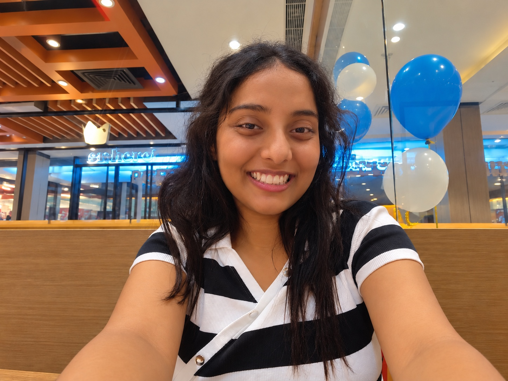
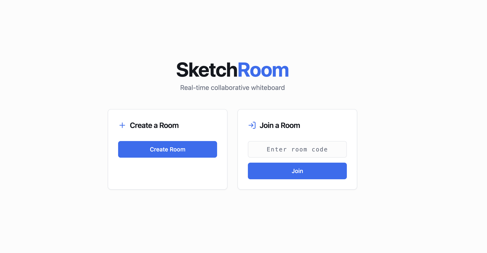
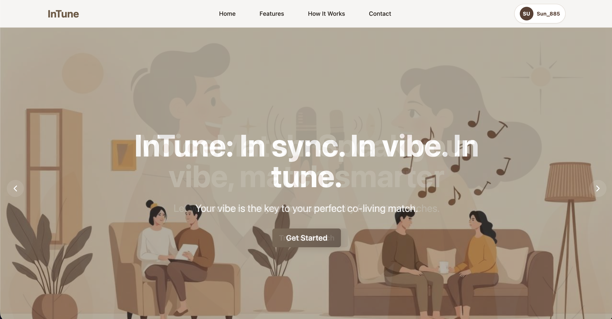
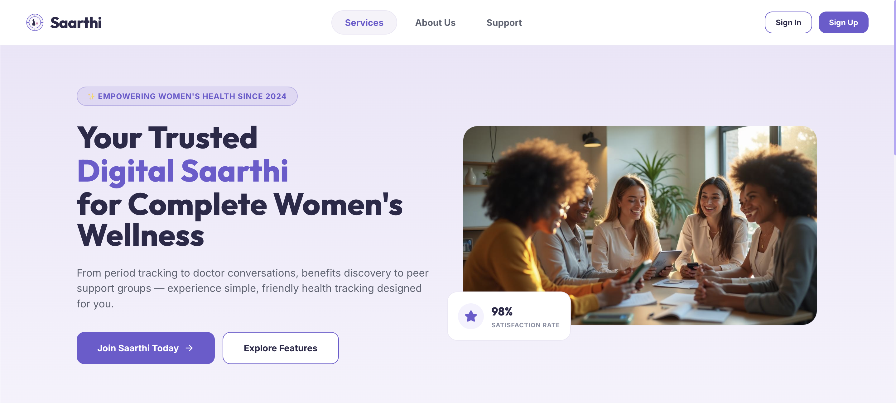

2023 — 2027
FULL-STACK DEVELOPMENT × REAL-TIME SYSTEMS
001 / 010I BUILDSYSTEMS WHEREIDEAS BECOME REAL.
Computer Science student building reliable full-stack and real-time systems.
ABOUT
002 / 010ABOUT
I’m Suhani, a final-year Computer Science and Engineering student at IIIT Kota. I enjoy taking ideas beyond the prototype stage and figuring out how the different pieces — backend engineering, data, real-time systems, and the interface — come together as one reliable system.
Most of my work has involved building full-stack systems, from collaborative applications to AI-integrated applications. I like working through the less visible engineering problems too: state, reliability, performance, edge cases, and what happens when real users actually start using the system.
Outside code, I’m usually reading, playing guitar, watching anime, or experimenting with something just because I’m curious whether I can make it work.

THE BUILD / BYTE
INTERACTIVE TRANSITIONEvery product here
arrived in pieces.
SCROLL TO CONNECT ↓MEET BYTE
Small parts.
Strong systems.
Interfaces, APIs, data, and the decisions that make them hold together.
MEET BYTE
The connections
matter more.
Hey, I'm Byte. Nice to meet you.
EDUCATION
003 / 010EDUCATION
2022
Sagar Public School
Class XIIBhopal, Madhya Pradesh88.88%2020
Sagar Public School
Class XBhopal, Madhya Pradesh95.2%EXPERIENCE
004 / 010EXPERIENCE
MAY 2024 — AUG 2024
Open Source
Contributor
GirlScript Summer of Code 2024
- Implemented React Context API-based global state management across React projects.
- Resolved responsive UI, component lifecycle, and interface consistency issues.
- Collaborated through Git, maintainer-reviewed pull requests, feature contributions, and bug fixes.
TOP 11%TOP 1601,500+ CONTRIBUTORS
TECH STACK
005 / 010TECH STACK
PROGRAMMING LANGUAGES
JJavaJSJavaScriptTSTypeScriptPyPythonCC
FRONTEND
⚛React≋Tailwind CSS5HTML5#CSS3
BACKEND
✿Spring Boot↗REST APIs⌁WebSocket
DATABASES & CACHING
◒MongoDB elephant PostgreSQLRRedisSQLMySQL
TOOLS & PLATFORMS
◇Docker▲VercelRRender⑂Git↗Postman⌘VS Code
RELEVANT COURSEWORK
Data Structures & AlgorithmsOperating SystemsDBMSComputer NetworksObject-Oriented ProgrammingMachine Learning
PROJECTS
PROJECTS
01 · PERSONAL PROJECT · 2026 · REAL-TIME COLLABORATIVE WHITEBOARD
SketchRoom
A real-time collaborative whiteboard built around synchronized shared state. Multiple users draw through STOMP/WebSocket rooms while the backend maintains ordered event history for late joins, reconnect recovery, and shared undo/redo.
ENGINEERING HIGHLIGHTSServer-assigned sequence numbers detect missing or duplicate updates during reconnect.Redis event history + PostgreSQL checkpoints keep board state recoverable.Late-join replay, presence, shared undo/redo, and room lifecycle handling.
SPRING BOOTREACTWEBSOCKET / STOMPREDISPOSTGRESQLTYPESCRIPTDOCKER

02 · PERSONAL PROJECT · 2026 · AI-ASSISTED ROOMMATE MATCHING
InTune
An AI-assisted roommate-matching platform that ranks candidates from natural-language lifestyle profiles. FastAPI generates reusable semantic embeddings while Spring Boot owns authentication, application rules, and persistence.
ENGINEERING HIGHLIGHTSSentence Transformers, 384-dimensional embeddings, cosine similarity, Top-K ranking, and Jaccard fallback.Voice-assisted onboarding with browser speech recognition, OmniDimension, and Tesseract.js OCR with Verhoeff validation.JWT/BCrypt authentication with backend-enforced authorization for matching, chat, expenses, and protected updates.
REACTTYPESCRIPTSPRING BOOTMONGODBFASTAPISENTENCE TRANSFORMERSTESSERACT.JSJWT / BCRYPT

03 · PERSONAL PROJECT · 2026 · WOMEN'S HEALTH & TELEHEALTH PLATFORM
Saarthi
A full-stack women's health and teleconsultation platform combining health tracking, provider discovery, appointment booking, payments, AI-assisted symptom guidance, and WebRTC consultations behind authenticated Spring Boot APIs.
ENGINEERING HIGHLIGHTSDatabase constraints and transactional booking rules make simultaneous appointment attempts deterministic.Stripe checkout idempotency and signature-verified webhooks reconcile payment state from backend evidence.Gemini guidance is bounded by timeouts, response validation, Resilience4j circuit breaking, and explicit fallback behavior.
SPRING BOOTREACTPOSTGRESQLSPRING SECURITY / JWTWEBRTCSTRIPEGEMINI APIRESILIENCE4JGEOAPIFY / OSM

SMALL BUILD
ACHIEVEMENTS
007 / 010ACHIEVEMENTS
CODING & LINKS
008 / 010PROFILES
CONTACT
010 / 010